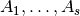
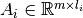
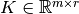

Warning
You are consulting the doc of a former version of PICOS. The latest version is HERE.
Introduction¶
PICOS is a user friendly interface to several conic and integer programming solvers, very much like YALMIP or CVX under MATLAB.
The main motivation for PICOS is to have the possibility to enter an optimization problem as a high level model, and to be able to solve it with several different solvers. Multidimensional and matrix variables are handled in a natural fashion, which makes it painless to formulate a SDP or a SOCP. This is very useful for educational purposes, and to quickly implement some models and test their validity on simple examples.
Furthermore, with PICOS you can take advantage of the python programming language to read and write data, construct a list of constraints by using python list comprehensions, take slices of multidimensional variables, etc.
It must also be said that PICOS is only a unified interface to other already existing interfaces of optimization solvers. So you have to install some additional packages each time you want to use PICOS with a new solver (see a list of supported solvers, and the packages you will have to install to use them). Furthermore, since PICOS is just another interface layer, one should expect an overhead due to PICOS in the solution time.
Here is a very simple example of the usage of PICOS:
>>> import picos as pic
>>> prob = pic.Problem()
>>> x = prob.add_variable('x',1, vtype='integer') #scalar integer variable
>>> prob.add_constraint(x<5.2) #x less or equal to 5.2
>>> prob.set_objective('max',x) #maximize x
>>> print prob
---------------------
optimization problem (MIP):
1 variables, 1 affine constraints
x : (1, 1), integer
maximize x
such that
x < 5.2
---------------------
>>> sol = prob.solve(solver='zibopt',verbose=0) #solve using the ZIB optimization suite
>>> print x #optimal value of x
5.0
Currently, PICOS can handle the following class of optimzation problems. A list of currently interfaced solvers can be found here.
- Linear Programming (LP)
- Mixed Integer Programming (MIP)
- Convex Quadratically constrained Quadratic Programming (convex QCQP)
- Second Order Cone Programming (SOCP)
- Semidefinite Programming (SDP), also with (complex-valued) Hermitian matrices.
- General Quadratically constrained Quadratic Programming (QCQP)
- Mixed Integer Quadratic Programming (MIQP)
There exists a number of similar projects, so we provide a (non-exhausive) list below, explaining their main differences with PICOS:
This is a python interface that can be used to solve any convex optimization problem that can be formed following the rules of disciplined convex programming (DCP).
This python package also provides an interface to the integer programming solver scip, as well as satisfiability (SAT) and constraint programming solvers (CP).
This is probably the most complete optimization suite written in python, handling a lot of problem types and interfacing many opensource and commercial solvers. However, the user has to transform every optimization problem into a canonical form himself, and this is what we want to avoid with PICOS.
puLP:
A user-friendly interface to a bunch of LP and MIP solvers.
A modelling language for optimization problems, a la AMPL.
A user-friendly package to formulate and solve general nonlinear constrained optimization problems. Several open-source and commercial solvers are interfaced.
This is a user-friendly interface to the ZIB optimization suite for solving mixed integer programs (MIP). PICOS provides an interface to this interface.
First Example¶
We give below a simple example of the use of PICOS, to solve an SOCP which arises in optimal experimental design. More examples can be found here. Given some observation matrices , with , and a coefficient matrix , the problem to solve is:
![\begin{center}
\begin{eqnarray*}
&\underset{\substack{\mu \in \mathbb{R}^s\\
\forall i \in [s],\ Z_i \in \mathbb{R}^{l_i \times r}}}{\mbox{minimize}}
& \sum_{i=1}^s \mu_i\\
&\mbox{subject to} & \sum_{i=1}^s A_i Z_i = K\\
& & \forall i \in [s],\ \Vert Z_i \Vert_F \leq \mu_i,
\end{eqnarray*}
\end{center}](_images/math/efd376f1e8e4f7f09f50a405aae45bfc6b6de13a.png)
where  denotes the
Frobenius norm of
denotes the
Frobenius norm of
 . This problem can be entered and solved as follows with PICOS:
. This problem can be entered and solved as follows with PICOS:
import picos as pic
import cvxopt as cvx
#generate data
A = [ cvx.sparse([[1 ,2 ,0 ],
[2 ,0 ,0 ]]),
cvx.sparse([[0 ,2 ,2 ]]),
cvx.sparse([[0 ,2 ,-1],
[-1,0 ,2 ],
[0 ,1 ,0 ]])
]
K = cvx.sparse([[1 ,1 ,1 ],
[1 ,-5,-5]])
#size of the data
s = len(A)
m = A[0].size[0]
l = [ Ai.size[1] for Ai in A ]
r = K.size[1]
#creates a problem and the optimization variables
prob = pic.Problem()
mu = prob.add_variable('mu',s)
Z = [prob.add_variable('Z[' + str(i) + ']', (l[i],r))
for i in range(s)]
#convert the constants into params of the problem
A = pic.new_param('A',A)
K = pic.new_param('K',K)
#add the constraints
prob.add_constraint( pic.sum([ A[i]*Z[i] for i in range(s)], #summands
'i', #name of the index
'[s]' #set to which the index belongs
) == K
)
prob.add_list_of_constraints( [ abs(Z[i]) < mu[i] for i in range(s)], #constraints
'i', #index of the constraints
'[s]' #set to which the index belongs
)
#sets the objective
prob.set_objective('min', 1 | mu ) # scalar product of the vector of all ones with mu
#display the problem
print prob
#call to the solver cvxopt
sol = prob.solve(solver='cvxopt', verbose = 0)
#show the value of the optimal variable
print '\n mu ='
print mu
#show the dual variable of the equality constraint
print'\nThe optimal dual variable of the'
print prob.get_constraint(0)
print 'is :'
print prob.get_constraint(0).dual
This generates the output:
---------------------
optimization problem (SOCP):
15 variables, 6 affine constraints, 15 vars in 3 SO cones
mu : (3, 1), continuous
Z : list of 3 variables, different sizes, continuous
minimize 〈 |1| | mu 〉
such that
Σ_{i in [s]} A[i]*Z[i] = K
||Z[i]|| < mu[i] for all i in [s]
---------------------
mu =
[ 6.60e-01]
[ 2.42e+00]
[ 1.64e-01]
The optimal dual variable of the
# (3x2)-affine constraint : Σ_{i in [s]} A[i]*Z[i] = K #
is :
[-3.41e-01]
[ 9.16e-02]
[-1.88e-01]
[-3.52e-01]
[ 2.32e-01]
[ 2.59e-01]
Solvers¶
Below is a list of the solvers currently interfaced by PICOS. We have indicated the classes of optimization problems that the solver can handle via PICOS. Note however that the solvers listed below might have other features that are not handled by PICOS.
To use one of these solver, make sure that the python interface to this solver is correctly
installed and linked in your PYTHONPATH variable. The sites of the solvers
give instructions to do this, except for zibopt, for which you must install
a separate interface: python-zibopt.
To check your installation, you can simply verify that
import cvxopt (resp. smcp, mosek, cplex, zibopt, gurobipy) does
not raise an ImportError. The command
>>> import picos;picos.tools.available_solvers()
returns the list of correctly installed solvers.
Requirements¶
PICOS has three dependencies: six , numpy
and
cvxopt. (cvxopt is needed even if you
do not use the cvxopt solvers, because picos relies on the
sparse matrices defined in cvxopt.)
In addition, you must install separately the python interfaces to each solver you want to use.
Installation¶
After having downloaded the latest version of picos, and extracted it in the directory of your choice, you can install it by typing the following line as root in a terminal:
$ python setup.py install
If you do not have administrator rights, you can also do a local installation of picos with the prefix scheme. For example:
$ python setup.py install --prefix ~/python
and make sure that $HOME'/python/lib/python2.x/site-packages/'
is in your PYTHONPATH variable.
To test your installation, you can run the test file:
$ python picos/test_picos.py
This will generate a table with a list of results for each available solver and class of optimization problems.
Alternatively, you can clone the latest development version from github:
$ git clone https://github.com/gsagnol/picos.git
in a directory that lies in your PYTHONPATH.
License¶
This program is free software: you can redistribute it and/or modify it under the terms of the GNU General Public License as published by the Free Software Foundation, either version 3 of the License, or (at your option) any later version.
This program is distributed in the hope that it will be useful, but WITHOUT ANY WARRANTY; without even the implied warranty of MERCHANTABILITY or FITNESS FOR A PARTICULAR PURPOSE. See the GNU General Public License for more details.
You should have received a copy of the GNU General Public License along with this program. If not, see <http://www.gnu.org/licenses/>.
Author and contributors¶
Author: Picos initial author and current primary developer is:
Guillaume Sagnol, <sagnol( a t )zib.de>
Contributors: People who actively contributed to the code of Picos (in no particular order)
- Sergio Callegari
- Petter Wittek
- Paul Fournel
- Arno Ulbricht
- Bertrand Omont
Contributors: People who contributed to the improvement of Picos by sending their comments, ideas, questions, ... (in no particular order):